Manuelle Lastenhandhabung umfasst das Bewegen von Lasten per Hand. Dazu gehören das Heben, Halten und Senken, das Tragen und Um- oder Absetzen von Lasten, aber auch das Schieben und Ziehen mittels Körperkraft.
Sind die Lasten besonders schwer oder müssen sie oft und weit bewegt werden, können sie zur Ermüdung der beanspruchten Muskulatur, zur allgemeinen körperlichen Ermüdung sowie zu Beschwerden und Erkrankungen des Muskel-Skelett-Systems führen. Betroffen ist meist der untere Rücken, der die höchsten Belastungen zu ertragen hat, aber auch die Schulter-Arm-Region,auf die die Lasten bei der Handhabung unmittelbar einwirken.
Ziele einer ergonomischen Gestaltung der Arbeit:
Als oberster Richtwert sollte gelten, dass eine von Menschen bewegte Last nicht schwerer als 25 kg für Männer und 15 kg für Frauen ist. Das ist nur eine grobe Orientierung, denn die höchste bei der Arbeit zumutbare Last hängt davon ab:
Arbeitsmediziner empfehlen auf der Basis von internationalen ergonomischen Normen zum Beispiel Gewichtsgrenzen von maximal 12 bis 13 kg, wenn Lasten regelmäßig länger als 2 Stunden pro Tag gehoben werden müssen.
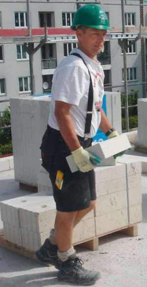
Manchmal muss die Last trotz Maschineneinsatz getragen werden.
Schwere Lasten sollten immer mit Hilfsmitteln, z. B. mit Kranen, Versetzhilfen, Treppensteigern oder zu zweit bewegt werden. Auch eine Schubkarre, die auf fast jeder Baustelle zu finden ist, erleichtert die Transportarbeiten. Das schützt die Gesundheit und erhöht langfristig die Effektivität der Arbeit.
Eine diesbezüglich auch von Ihrer BG BAU gut erforschte Arbeit ist das Mauern mit großformatigen Mauersteinen mit Gewichten bis zu 25 kg, die als Zweihandsteine bezeichnet werden. In der BGI 695 "Merkblatt für das Handhaben von Mauersteinen" wird auf technische Lösungen durch den Einsatz von Minikranen und Mauermaschinen hingewiesen. Es handelt sich um spezifische Lösungen für das Versetzen von Steinen im Mauerwerksbau. Damit können körperliche Belastungen durch das Heben und Tragen schwerer Steine und Planelemente deutlich reduziert werden.
Weitere technische Hilfsmittel zur Verminderung der Belastung beim Heben und Tragen von Lasten neben Kranen, Bauaufzügen und verschiedenen Transportkarren sind auf der Internetseite www.ergonomie-bau.de dargestellt.
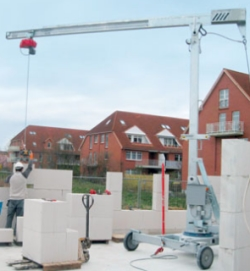
Mauern mit Minikran
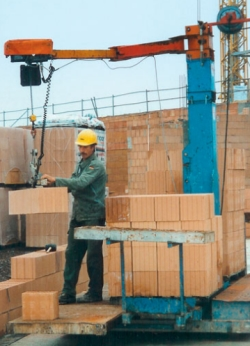
Mauern mit Mauermaschine
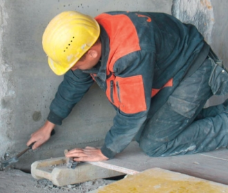
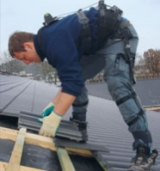
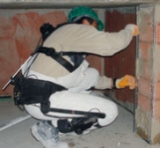
Arbeiten im Knien, Hocken, Bücken
Zu den körperlichen Zwangshaltungen gehören Knien, Hocken und Bücken. Diese Körperhaltungen müssen wegen der auszuführenden Arbeiten mit geringen Bewegungsmöglichkeiten über eine längere Zeit eingenommen werden. Sie führen zu hoher Muskelbeanspruchung und Druck auf Strukturen in den Gelenken mit Störungen ihres Stoffwechsels (Knorpel- und Bandscheibenernährung).
Weitere Informationen finden Sie unter
www.ergonomie-bau.de
Durch Belastungen sind betroffen:
Ziele einer ergonomischen Gestaltung der Arbeit:
Arbeiten auf dem Boden und in Bodennähe sind naturgemäß nicht zu vermeiden. Das wissen Fliesenleger, Parkettleger, Raumausstatter, Dachdecker, Estrichleger, Pflasterer und viele andere. Manche haben bereits Rücken- und Gelenkbeschwerden. Auch wenn es ungewohnt ist: Durch den Einsatz von Hilfsmitteln kann teilweise im Stehen oder Sitzen gearbeitet werden. Geeignete Hilfsmittel und Arbeitsweisen sind:
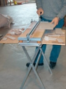
Fliesenlegertisch
Bei Fliesenlegerarbeiten können Nebenarbeiten wie das Zuschneiden der Fliesen auf einem höhenverstellbaren Arbeitstisch durchgeführt werden
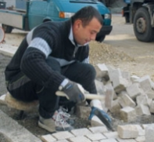
Pflasterstühlchen
Auch einfache Hilfsmittel wie ein Pflasterstuhl können die Kniebelastungen reduzieren.
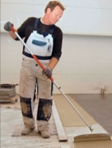
Teleskopstiele mit Anbauwerkzeugen
Bei Bodenbelagsarbeiten existieren vielfältige Hilfsmittel, allen voran Teleskopstiele, an die Bodenbearbeitungswerkzeuge angebaut werden können, (z. B. I-Tools). Damit sind das Aufbringen von Ausgleichsmassen und Klebern, das Zuschneiden und das Verschweißen von Nähten bei der Linoleumverlegung und vieles mehr möglich
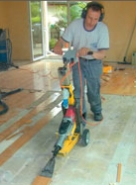
Meißelstripper auf Fahrwerk
Üblicherweise werden Parkett- und andere Hartböden mit handgeführten Schabern oder Elektrohämmern entfernt. Durch die Benutzung eines im Wagen geführten Elektrohammers ist das Arbeiten in aufrechter Körperhaltung möglich. Das Gewicht des Hammers wird vom Führungswagen getragen. Vibrationen auf das Hand-Arm-System werden reduziert.
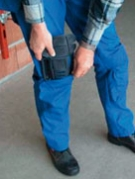
Knieschutzhose
Beim Arbeiten im Knien entstehen hohe Druckbelastungen auf die Kniegelenke, die zu Schleimbeutelentzündungen führen können. Knieschützer fangen den Druck ab und helfen gegen Einflüsse wie Nässe und Kälte. Besonders zu empfehlen sind Arbeitshosen mit eingearbeitetem Knieschutz.
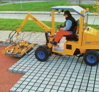
Hydraulische Verlegezangen für Verbundpflastersteine
Das Verlegen von Verbundpflastersteinen kann mit hydraulischen Verlegezangen, die an entsprechende Trägergeräte angebaut werden, erfolgen.
Arbeiten über Schulter- bzw. Kopfhöhe
Wenn Werkzeuge oder Material in Schulterhöhe oder höher über längere Zeit gehalten werden müssen, ermüden die Armmuskeln, die Schultergelenke werden sehr angestrengt und die Halswirbelsäule durch die Überstreckung belastet. Diese Form der Zwangshaltung kann deshalb ohne Unterstützung nur kurze Zeit ausgeführt werden.
Zunächst gelangt die belastete Muskulatur schnell an die Grenze ihrer Leistungsfähigkeit. Die Muskelermüdung erzwingt Pausen, da die Muskeln versagen. Diese Kraftausdauerleistung kann man zwar begrenzt trainieren, dennoch bleibt Arbeit über Schulter- oder gar Kopfhöhe in ihrer Ausführbarkeit auf kürzere Zeitabschnitte beschränkt. Eine geringe Entlastung wird erreicht, wenn man bei der Arbeit die Arme z. B. am Arbeitsobjekt abstützen kann.
Eine weitere Folge kann sein, dass das in alle Richtungen sehr bewegliche, aber zugleich sensible Schultergelenk im Rahmen der Alterung von Sehnen der umgebenden Arm- und Schultermuskeln instabil wird und schmerzt.
Werden Arbeiten an der Decke oder weit über den Schultern an der Wand ausgeführt, muss zusätzlich der Hals nach hinten gestreckt werden, weil hier zusätzlich der Blick nach oben gerichtet werden muss. Die Nackenmuskulatur wird besonders angespannt, was bei andauernder Belastung zu Schmerzen führen kann, die in den Hinterkopf und in die Schultern ausstrahlen und die sogar als Kopfschmerzen empfunden werden können.
Ziele einer ergonomischen Gestaltung der Arbeit:
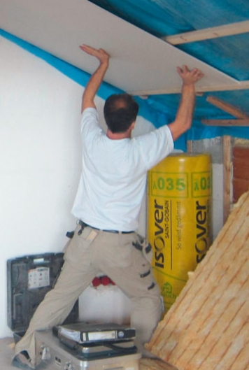
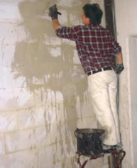
Arbeiten über Kopf- und Schulterhöhe lassen sich nicht immer vermeiden. Vor allem bei Arbeiten an Decken und Wänden wie z. B. im Trockenbau, bei Malerarbeiten, Putzarbeiten und Glaserarbeiten treten sie gehäuft auf. Geeignete Arbeitsweisen und Hilfsmittel sind:
Weitere Beispiele für ergonomisch sinnvolle Lösungen sind auf unserer Internetseite www.ergonomie-bau.dezu finden.
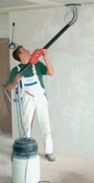
Langhalsschleifer
Zur Oberflächenvorbereitung an Wänden, Decken und Böden. Während des konventionellen Schleifens von Oberflächen im Boden-, Decken- und Wandbereich treten für den Beschäftigten erhebliche Belastungen durch Arbeiten über Kopf bzw. in gebückter Haltung auf. Durch den Langhalsschleifer werden diese Belastungen reduziert.
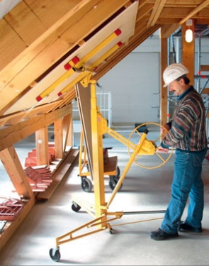
Plattenlifte
Zur Montage, z. B. von Gipskartonplatten und Pressspanplatten an Wänden, Decken und Dachschrägen.
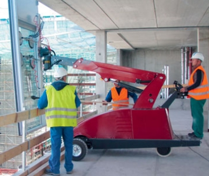
Glaslifte
Zum Transport und Einbau flächiger Bauteile mit glatten Oberflächen (z. B. Glasscheiben, Fassadenplatten, Gipskartonplatten). Die Gegenstände werden mittels Saugtellern fixiert und können in den unterschiedlichsten Positionen und Neigungswinkeln gehalten und eingebaut werden. So entfällt das Heben und Tragen schwerer Lasten beim Transport, das Heben und Halten und die damit verbundene Überkopfarbeit beim Einbau der Elemente.
Sich ständig wiederholende Bewegungsabläufe
Wegen der ständigen gleichförmigen Wiederholung von Bewegungsabläufen werden bestimmte Tätigkeiten als "repetitiv" bezeichnet. Werden gleiche oder sehr ähnliche Tätigkeiten wieder und wieder mit den gleichen Muskeln durchgeführt, führt das zu einer starken Muskelermüdung, aber auch zu einer Reizung der Sehnenansätze an den Knochen. Besonders belastend sind diese Arbeiten dann, wenn sie
Besonders beansprucht sind die Arme und Hände, vor allem aber die Ellenbogen- und die Handgelenke. Die Folgen sind:
Ziele einer ergonomischen Gestaltung der Arbeit:
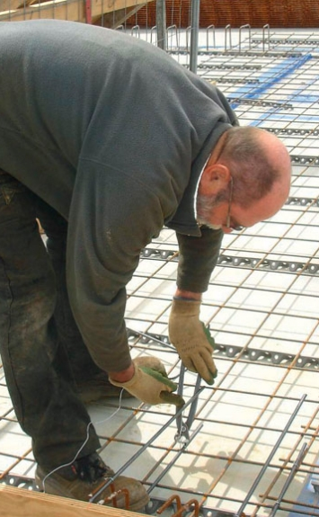
Eisenflechtarbeiten
Typische Tätigkeiten sind Arbeiten mit Hämmern wie bei Zimmerern, im Trockenbau und bei Pflastererarbeiten. Gleichförmige Belastungen treten auch beim Binden von Bewehrungselementen mit der Zange auf. Aber auch das Verlegen von Dachsteinen und Vermauern kleinformatiger Mauersteine verlangen sich ständig wiederholende Bewegungsabläufe. Der Einsatz von Handmaschinen und rückschlagfreien Hämmern kann die Arbeit wesentlich erleichtern, wie die folgenden Beispiele zeigen:
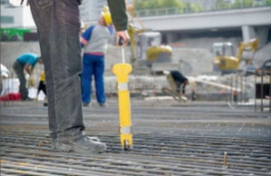
Bewehrungsbindegerät
Zum Binden von Betonstahl, Befestigen von Rohrleitungen (Betonkerntemperierung) sowie Fixieren von Leerrohren. Der Vorteil gegenüber der Flechterzange besteht in der weitgehenden Vermeidung der Vorneigung des Oberkörpers, auch bei Flechtarbeiten am Boden unter Fußniveau. Die aufzuwendende Handkraft ist mit diesen Geräten geringer, sodass Finger-, Hand- und Ellenbogengelenke entlastet werden.
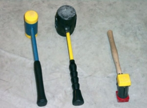
Rückschlagfreie Hämmer
Bei rückschlagfreien Hämmern wird das Zurückprallen nahezu vermieden. Damit vermindern sich die Kräfte auf das Hand-Arm-System und die aufgewendete Energie wird besser ausgenutzt. Weniger Schläge sind erforderlich, um die gleiche Leistung zu erbringen.
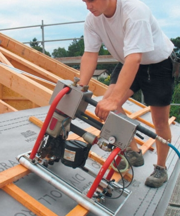
Einlattgerät
Das Einlatten von Dachflächen beinhaltet auch das Messen und Ausrichten von Dachlatten. Das Fixieren und Befestigen erfolgt mit Hammer bzw. Druckluftnagler. Diese Tätigkeiten erfordern das Arbeiten in Zwangshaltungen und den Umgang mit Hammer oder Handmaschinen über einen langen Zeitraum. Mit dem Einlattgerät werden die Latten ausgerichtet, auf Länge geschnitten und genagelt. Damit verringert sich die körperliche Belastung deutlich.
Halten und Führen von Werkzeugen
Belastungen der Hände und Arme entstehen auch durch Kraftanstrengungen bei der Benutzung von Handwerkzeugen. Die Ursachen können im hohen Gewicht des Werkzeugs, in seiner ungünstigen Schwerpunktlage gegenüber der Hand mit besonderen Belastungen der Handgelenke, aber auch in der Qualität des Handgriffs zur Kraftübertragung liegen. Diese Ursachen können vor allem Muskelermüdungen zur Folge haben, die wiederum Schmerzen auslösen und die Leistung beeinträchtigen können.
Ziele einer ergonomischen Gestaltung der Arbeit:
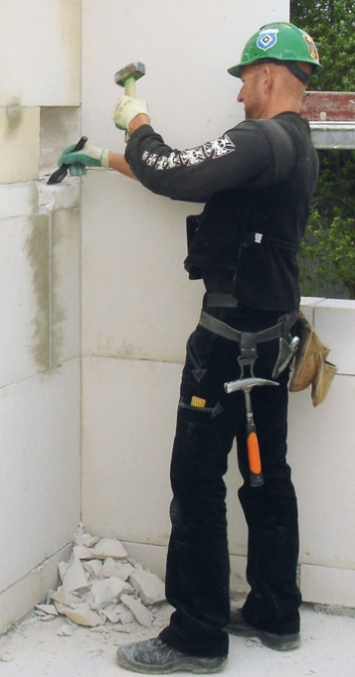
Handwerkzeuge werden überall auf dem Bau benötigt. Egal ob Hämmer, Zangen oder Schraubendreher, sie sollten aus hoch-wertigem Material bestehen und ergonomische Grundanforderungen erfüllen.
Woran erkenne ich ergonomische Handwerkzeuge?
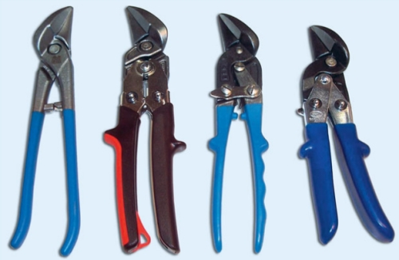
Zangen mit unterschiedlichen Griffen
Vibrationen an handgeführten Maschinen – Hand-Arm-Vibrationen
Vibrierende Werkzeuge und Maschinen (z. B. Abbruch- und Bohrhämmer, Trennschleifer oder Verdichter) leiten einen Teil ihrer Energie stoßartig und in hoher Frequenz in die Hände und Arme ein. Von den Folgen sind zuerst die Handwurzel und die Handgelenke, dann die Ellenbogengelenke und eventuell auch die Schultergelenke betroffen.
Grundsätzlich können Hand-Arm-Vibrationen zwei Arten von Gesundheitsstörungen oder -schäden verursachen, denen auch zwei verschiedene Berufskrankheiten entsprechen:
Ziele einer ergonomischen Gestaltung der Arbeit:
Auf der Grundlage der Lärm- und Vibrations-Arbeitsschutzverordnung existieren gesetzlich verbindliche Höchstwerte der zumutbaren bzw. zulässigen Vibrationseinwirkung. Diese auf 8 Stunden bezogenen Grenzwerte sind:
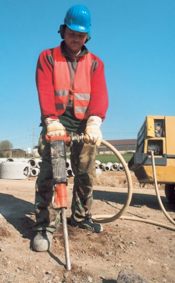
Hand-Arm-Vibrationen
Vibrationen an Handmaschinen
Weitere Informationen finden Sie unter
www.ergonomie-bau.de.
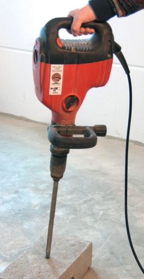
Abbruchhammer – vibrationsgemindert
Vibrationen auf Baumaschinen – Ganzkörpervibration
Beim Fahren von Baumaschinen (z. B. Bagger und Lader) treten Ganzkörperschwingungen auf, die zu Belastungen der Rückenmuskulatur und der Wirbelsäule führen können. Beim Sitzen auf Baugeräten und anderen vibrierenden Maschinen wird die Vibrationsenergie in den Körper über das Gesäß eingeleitet. Die Rückenmuskeln werden angestrengt, um diese Einwirkungen zu kompensieren. Das führt zu Rückenschmerzen. Bei besonders starker Einwirkung können sich auch Bandscheibenschäden der Lendenwirbelsäule entwickeln.
Ziele einer ergonomischen Gestaltung der Arbeit:
Auf der Grundlage der Lärm- und Vibrations-Arbeitsschutzverordnung existieren gesetzlich verbindliche Höchstwerte der zumutbaren bzw. zulässigen Vibrationseinwirkung. Diese auf 8 Stunden bezogenen Grenzwerte sind:
Für die Belastungsermittlung im Rahmen der Gefährdungsbeurteilung zum Thema Vibrationen existiert eine Handlungshilfe der BG BAU (Handlungshilfe zur Umsetzung der Lärm- und Vibrations-Arbeitsschutzverordnung – Vibration). Die Präventionsdienste der BG BAU können Sie dazu beraten.
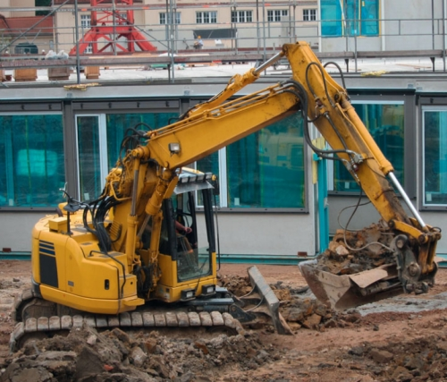
Vibrationen auf Baumaschinen
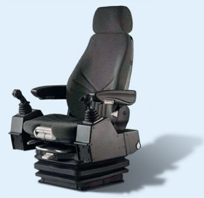
Bauarbeiten finden oft im Freien bei jedem Wetter statt, also auch an heißen Sommertagen. Wenn dazu noch arbeitsbedingte Belastungen wie Wärmeabstrahlung beim Einbau von Bitumenbelag im Straßenbau kommen, wird die Wärmeregulation des menschlichen Körpers bis an ihre Grenzen belastet. Der energetische Wirkungsgrad des Menschen ist gering, denn bei körperlicher Arbeit werden mehr als zwei Drittel der Energie in Wärme umgewandelt, die über die Haut und die Atmung abgegeben werden muss, um die Körpertemperatur zu stabilisieren. Das Herz-Kreislauf-System des Körpers, das den Muskeln die nötige Energie zur körperlichen Arbeit bereitstellt, wird zu maximaler Leistung gezwungen und gibt die Grenzen der körperlichen Leistungsfähigkeit bei Arbeiten z. B. im Hochsommer vor.
Für gesunde Mitarbeiter gilt dann bereits:
Beschäftigte mit chronischen Erkrankungen wie z. B. Bluthochdruck, Durchblutungsstörungen am Herzen, chronischer Bronchitis und Asthma, Nieren- oder Lebererkrankungen, Stoffwechselstörungen oder Neigung zu Krampfanfällen sowie extrem Übergewichtige und Alkoholabhängige sind von den Folgen der Hitzebelastung besonders betroffen. Für sie sind Beschäftigungsbeschränkungen bei Hitzearbeiten zu prüfen.
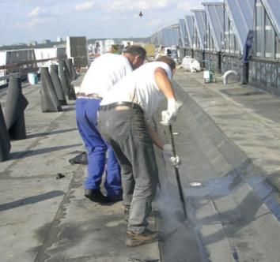
Hitzearbeit
Arbeiten mit Sonnenschutz
Ziele einer ergonomischen Gestaltung der Arbeit:
Für die Arbeit im Freien gilt:
Eine besondere Belastung stellen zu jeder Jahreszeit die Arbeiten unter Vollschutz (z. B. Chemikalienschutzanzug und Atemschutz) zum Beispiel bei Sanierungsarbeiten von krebserzeugenden Gefahrstoffen wie Asbest dar. Jede Ausrüstung von Beschäftigten mit Schutzanzügen, die keine Fremdbelüftung aufweisen, führt zu einem Wärmestau innerhalb des Anzugs, der eine erhöhte Herz-Kreislauf-Belastung zur Folge hat.
Je nach Art des Vollschutzes und der Schwere der körperlichen Arbeit werden im Anhang 2 der BGR/GUV-R 190 "Benutzung von Atemschutzgeräten" Tragezeitbegrenzungen und eine Erholungsdauer als Arbeitsunterbrechung unter Berücksichtigung der Arbeitsschwere bzw. des Atemzeitvolumens je Minute ge regelt. Dabei kann es sein, dass unter bestimmten Umständen die größte körperliche Belas-tung aus der Klimabeanspruchung des Körpers in der Ausrüstung mit Vollschutz besteht (siehe auch BGI 8685 Chemikalienschutzkleidung).
Die Arbeitsverdichtung auf dem Bau hat zugenommen. Die Arbeiten sind präzise getaktet, sodass man genau weiß, wie viel Zeit man für eine bestimmte Tätigkeit zur Verfügung hat. Defizite in der persönlichen Leistung werden dadurch schneller erkennbar.
Soziale Kontakte innerhalb der Arbeit werden reduziert, denn zum Beispiel das Feiern des Geburtstags eines Kollegen passt immer weniger in die Arbeitszeit. Damit nimmt der soziale Rückhalt immer mehr ab und psychische Belastung – Stress – kann weniger kompensiert werden.
Stress ist eine uralte körperliche Reaktion im Menschen, die uns das Überleben als Art gesichert hat. Eine gute Stressreaktion machte bereit für Kampf und Flucht. Doch die realen Gefahren durch gefährliche Gegner sind den Bewertungen aller Situationen durch unsere Gedanken gewichen. Stress wird durch eine angstbetonte Bedrohung gekennzeichnet, die geforderte Arbeitsleistung nicht erbringen zu können. Und obwohl Stress eine sehr persönliche Reaktion ist, können folgende Bedingungen am Arbeitsplatz Stressreaktionen erzeugen, vor allem wenn sie gehäuft auftreten:
Eine neue Arbeitsgestaltung, die nicht mit den Mitarbeitern gemeinsam, sondern über ihre Köpfe hinweg entwickelt wurde, kann eher zu Ablehnung und zur Nichtanwendung als zu einer Arbeitserleichterung führen. Daneben ist es wichtig zu wissen, dass die Benutzung eines neuen Werkzeugs oder Hilfsmittels viele Hundert Male der bewussten Übung durch Gebrauch bedarf, bis sich durch Gewohnheit der Nutzen des neuen Instruments einstellt.